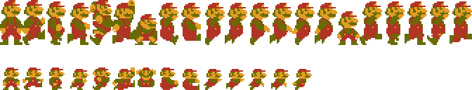
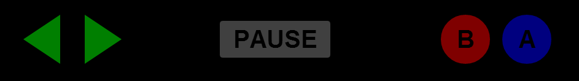
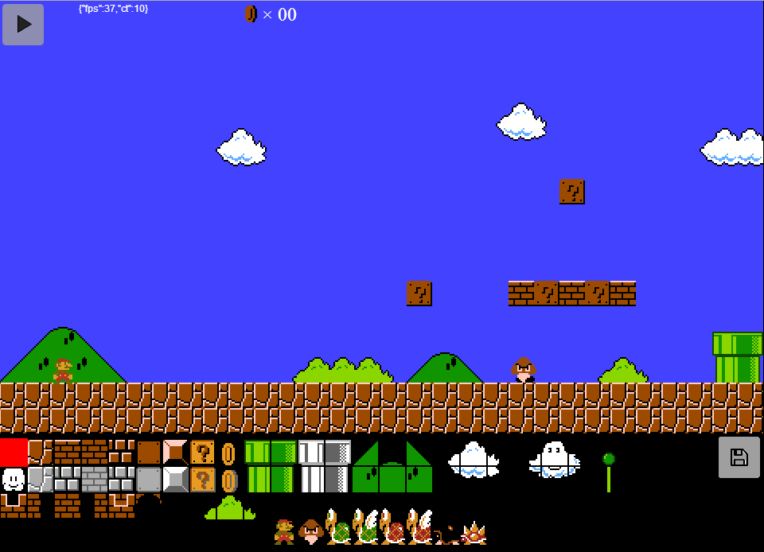
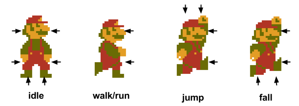

An elementary HTML5 Canvas game engine built on Backbone. Specialized for 2D platformers, and optimized for mobile.
These examples are on Github.
Backbone Game Engine was written to run inside of CocoonJS Canvas+, so you can turn your HTML5 game into a native application on iOS or Android. If you have the CocoonJS launcher loaded on your iOS or Android device, you can load Super Mario Bros level 1-1 via this URL:
http://martindrapeau.github.io/cocoon-mario/cocoon-mario.zip
All included in the 3rd folder. That and nothing else.
Backbone implements events, models, collections, inheritance and persistence. Models implement getters and setters for object attributes. Models and Collections have an extend function to easily do inheritance. They implement methods for persistence (RESTful JSON by default). They can also trigger events and bind to them. Everything you need to build a great extensible game engine. Plus, Backbone is now widely used and provides these features in a standard fashion with a huge community to support them. I hope this project can make game programming accessible to developers already familiar with Backbone.
Backbone Game Engine was built to get you going fast. Fork this repository, and your own Github page will be ready in minutes. You can then create your own games by simply creating a new directory, and putting files in it.
The default branch is gh-pages so that any changes get published automatically to the Github page. Changes typically take only a few seconds to get published. This allows you to develop, test, document and deploy rapidly. It is a double-edge sword though. Any untested code you push to your fork on that branch will be felt by your users. It is therefore a good practice to create and work on another branch, and fast-forward merge to the gh-pages branch when done.
To report a bug, use Github issues. To contribute improvements, bug fixes or new examples, make changes to your fork and do a pull request. For anyone looking to help, here is a short to-do list:
The engine is based on Backbone so it is essential to understand its core structure: a Backbone.Model. A model has hash of attributes that are changed via getter and setter methods get and set. These attributes should only contain state information as it is those attributes which get saved and restored. A model is a Javascript object. Hence behaviour can be stored as properties and methods directly on the object. For example a sprite sheet points to an image. Attribute img contains the Image object or DOM selector (by id) for retrieving the Image object. Property img contains reference to the Image object. It is automatically set when the sprite sheet model is initialized.
var spriteSheet = new Backbone.SpriteSheet({
id: "mario",
img: "#mario",
tileWidth: 32,
tileHeight: 64,
tileColumns: 21,
tileRows: 6
});
spriteSheet.get("img"); // attribute
// #mario
spriteSheet.img; // property
// <img id="mario" src="../super-mario-bros/super-mario-2x.png" style="display:none;">
spriteSheet.img.width
//672
spriteSheet.img.height
//384
In fact, a model stores its attributes in the object property attributes. Methods get, set and toJSON operate on that property. Just remember that state date like sprite coordinates, velocity, etc go in there. However references to other objects do not.
Backbone Game Engine does not use jQuery. Instead, it depends on backbone.native which re-creates the ubiquitous $ function/object with only essentials required by Backbone. As such, you are limited to simple DOM selectors enabled by querySelectorAll and events. Since the framework is for canvas-based games, avoid HTML manipulations. Canvas-based only allows for easier wrapping with CocoonJS. Consult the documentation of backbone.native to understand limitations.
To create a new example (or game), create an empty directory at the same level as super-mario-bros. Then, add some files. Here is the recommended file structure:
3rd/
src/
...
super-mario-bros/
my-game/
index.html
main.js
index.html is the HTML document which loads your assets, and defines your canvas. File main.js is where you instantiate the game engine and sprites. It must get loaded last.
The HTML document (usually named index.html in its own folder) declares the assets to be loaded and the canvas element. Javascript assets are declared in the HEAD element. Images are loaded via IMG elements. They must be hidden with inline CSS. Everything is bootstrap-loaded as declared in the HTML file. There is no asynchronous loading.
Here is an example HTML file taken from the example Mario.
<!doctype html>
<html style="touch-action: none;">
<head>
<title>Mario - Backbone Game Engine</title>
<meta charset="utf-8">
<meta http-equiv="X-UA-Compatible" content="IE=edge">
<link href="../favicon.ico" rel="shortcut icon" type="image/x-icon" />
<link href="../apple_touch_icon.png" rel="apple-touch-icon" />
<meta name="viewport" content="width=960, user-scalable=no"/>
<meta name="apple-mobile-web-app-capable" content="yes" />
<meta name="mobile-web-app-capable" content="yes" />
<meta name="apple-mobile-web-app-status-bar-style" content="black-translucent"/>
<script src="../3rd/underscore.js" type="text/javascript"></script>
<script src="../3rd/backbone.native.js" type="text/javascript"></script>
<script src="../3rd/backbone.js" type="text/javascript"></script>
<script src="../src/shapes.js" type="text/javascript"></script>
<script src="../src/core.js" type="text/javascript"></script>
<script src="../src/input.js" type="text/javascript"></script>
<script src="../src/hero.js" type="text/javascript"></script>
<script src="../src/world.js" type="text/javascript"></script>
<script src="main.js" type="text/javascript"></script>
<style>
body {
margin: 0;
background-color: #000;
}
canvas {
position: fixed;
top: 0;
left: 0;
}
</style>
</head>
<body>
<img id="mario" src="../super-mario-bros/super-mario-2x.png" style="display:none;" />
<canvas id="foreground" width="960" height="700">
Your browser does not support canvas element.
</canvas>
</body>
</html>
Some important notes:
viewport, apple-mobile-web-app-capable, mobile-web-app-capable and apple-mobile-web-app-status-bar-style ensure the canvas is properly sized and styled on iPads and other mobile devices. The width specified there should be the same as the canvas elements. On mobile devices, an orientation change will recalculate and change the width to fit the canvas in the viewport. touch-action: none; on the HTML tag disables touch behaviors, like pan and zoom for IE10.getElementById Javascript function to retrieve the Canvas and Image objects from their respective DOM elements.
File main.js is where you declare and initialize your objects. It is recommended that you wrap that code in a function which gets executed once the document and all assets are loaded (i.e. window.onload event). You can use for example $(window).on("load", function() {});.
Other files use a simple anonymous function instead since they contain class declarations mainly. However in main.js is where Canvas and Image objects are retrieved from the DOM elements. So they must first be loaded. This keeps things simple. Assets are as a consequence always loaded synchronously.
Here is a sample main.js file, taken from the Mario example.
$(window).on("load", function() {
// Mario alone in an empty world. Control him with the touchpad.
Backbone.Mario = Backbone.Hero.extend({
defaults: _.extend({}, Backbone.Hero.prototype.defaults, {
name: "mario",
spriteSheet: "mario"
})
});
var canvas = document.getElementById("foreground");
var spriteSheets = new Backbone.SpriteSheetCollection([{
id: "mario",
img: "#mario",
tileWidth: 32,
tileHeight: 64,
tileColumns: 21,
tileRows: 6
}]).attachToSpriteClasses();
var debugPanel = new Backbone.DebugPanel();
var input = new Backbone.Input({
drawTouchpad: true,
drawPause: true
});
var mario = new Backbone.Mario({
x: 400, y: 400, floor: 500
}, {
input: input
});
var world = new Backbone.World({
width: 30, height: 18,
tileWidth: 32, tileHeight: 32,
backgroundColor: "rgba(66, 66, 255, 1)",
viewportBottom: 156
});
world.add(mario);
var engine = new Backbone.Engine({}, {
canvas: canvas,
debugPanel: this.debugPanel,
input: input
});
engine.add([
world,
input,
debugPanel
]);
// Expose things as globals - easier to debug
_.extend(window, {
canvas: canvas,
engine: engine
});
// Ensure the canvas is always visible and centered
adjustViewport(canvas, canvas.width, canvas.height);
});
Backbone Game Engine defines classes in the Backbone namespace. Most are sub-classed from Backbone.Model or Backbone.Collection.
new Backbone.Engine([attributes], [options])
Backbone.Engine is a Backbone model that holds a Backbone collection of sprite models.
It uses HTML5's requestAnimationFrame to provide a 60 frames per second game loop.
The sprite collection is stored in property sprites. You may directly access it however for convenience, methods add, remove and reset exist as proxy the engine.
clearOnDraw: Optional. Boolean to ask for a clear of the canvas before redraw. Defaults to false. Note that this is an expensive call. Better to only clear the area that changed.tapDetectionDelay: Optional. The delay in ms before a tap gestured is detected. Defaults to 50mstapMoveTolerance: Optional. The amount of pixel move tolerated to detect a tap gesture. Defaults to +/-5 pixels. Beyond that, a drag gesture will be trigerred.
Upon instantiation, these options can be passed. They will be stored as properties on the Backbone.Engine model instance.
canvas: The canvas to draw upon. Drawing is on its 2d context.input: Optional. The user control input instance. If passed and the pause button is enabled, will stop/start then engine when pressed.debugPanel: Optional. A Backbone.DebugPanel instance. If passed fps and cycleTime are output.add(): Adds one or multiple models delegating to the sprite collection's add method.remove(): Removes one or multiple models delegating to the sprite collection's remove method.reset(): Clears or sets the sprites collection delegating to the reset method.isRunning(): Returns true if the engine is running, or false if not.start(), stop(): Starts or stops the engine.toggle(): Toggle start/stop the engine.tap: Trigerred when the user clicks or taps on the canvas. A tap is defined when the user presses/clicks on a position without moving for more than tapDetectionDelay ms. The event callback function is passed the DOM event object, with these extra properties attached: canvas, canvasX and canvasY. In addition, property canvasHandled is provided as a mechanism to stop propagation (see below). key: Trigerred when the user types in a key. The event callback function is passed the DOM event object, with additional property canvas.dragstart, dragmove and dragend: Trigerred when a drag gesture occurs. This happens when the user presses/clicks and holds and moves. When these events are trigerred, the tap event does not get trigerred.tap and drag* events are broadcasted to whomever is listening. Event property canvasHandled is used to to prevent propagation to many overlapping objects. At first it is set to false. The first object to intercept and handle the event should set it to true. Subsequent objects intercepting the event should look at this property and return without action when true. Backbone.Button and Backbone.WorldEditor implement this behavior.
During every animation frame, the engine performs these things:
update method. Passing dt, the time in milliseconds since the last call to update. The update method must return true to ask for a redraw, or false not to.draw method passing context, the canvas 2d context. Perform whatever magic you like in the draw method.clearOnDraw option to do so however it is an expensive call. Better to do it only when required. See class Backbone.World for an example.
The update method is used to update the model position, animation, detect collisions, or whatever you like. If it requests a redraw, the engine will then call its draw method. The engine ensures that models are updated and drawn in the order they are sorted in the collection. You can define the sort order by defining a comparator.
Models added to the collection receive an attach event and have property engine set as backreference. When removed, they receive a detach event.
To measure performance, two properties are set: fps and cycleTime. If you passed option debugPanel, they will be drawn on screen.
The engine can be started and stopped. When running, will perform an update/draw sequence 60 times per second. Use methods start, stop or toggle. Use method isRunning to determine if the engine is running. If you passed option input, the engine will bind to the pause button (or the p key) to toggle start/stop.
var canvas = document.getElementById("foreground");
var debugPanel = new Backbone.DebugPanel();
var ball = new Backbone.Ball({
x: 100, y: 100, color: "blue"
});
var engine = new Backbone.Engine({
clearOnDraw: true
}, {
canvas: canvas,
debugPanel: debugPanel
});
engine.add([
ball,
debugPanel
]);
Taken from the Bouncing Ball example. Draws two models: the debug panel and a bouncing ball.
new Backbone.SpriteSheet([attributes], [options]);
Backbone.SpriteSheet is a Backbone model which breaks an image into frames used for animation.
img: The Image object or element id selector of the image to find in the DOM (i.e. #icons). A pointer to the Image object is then stored in property img.imgUrl: Optional. The url to the image to load dynamically. If specified, and the image element does not exist, will try to load the image.tileWidth, tileHeight: Size of tiles in pixels.tileColumns, tileRows: Number of tiles in the image.frames: Array of animation frames. Automatically set when model is instantiated.img: Pointer to Image object. Automatically set when model is instantiated.spawnImg: Trigerred when the image is fully loaded.destroyImg: Trigerred when the image is unloaded.
When a sprite sheet is instantiated, an array of frames is built and stored in property frames. A frame object contains the coordinates of the frame. It consists of {x, y, width, height} representing the pixel position and size of the frame. These will be passed to the HTML5 canvas drawImage function as arguments sx, sy, sw, sh by the draw method.
Sprite sheets are not generally created on their own, but rather in a Backbone.SpriteSheetCollection. See below for usage.
new Backbone.SpriteSheetCollection([models], [options]);
Backbone.SpriteSheetCollection is a Backbone collection of Backbone.SpriteSheet models.
attachToSpriteClasses(): Attaches sprite sheets to sprite class prototypes. Does so by finding all defined sprite classes (Backbone.*) with default attribute spriteSheet matching a sprite sheet id in the collection. Then sets their spriteSheet property to point to the correct sprite sheet in the collection.allSpawnImg: Trigerred when all images are fully loaded.Define your sprite sheets by creating a collection as such:
this.spriteSheets = new Backbone.SpriteSheetCollection([{
id: "mario",
img: "#mario",
tileWidth: 32,
tileHeight: 64,
tileColumns: 21,
tileRows: 2
}, {
id: "tiles",
img: "#tiles",
tileWidth: 32,
tileHeight: 32,
tileColumns: 29,
tileRows: 28
}]).attachToSpriteClasses();

Here two sprite sheets are created mario and tiles. Their graphics are in Image objects found in the DOM. The attribute img is the selector to retrieve them.
Calling method attachToSpriteClasses will attach the sprite sheets to each sprite class found in the Backbone namespace.
new Backbone.Sprite([attributes], [options]);
Backbone.Sprite is a Backbone Model which implements the required update and draw methods to animate a sprite, frame by frame.
x, y: The coordinates in pixels.width, height: Size of the sprite in pixels.paddingLeft, paddingRight, paddingTop, paddingBottom: Optional. Internal padding to account for empty space inside the tile of a sprite. Useful to specify empty zones for collision detection.sequenceIndex: The current animation sequence frame. Automatically set.state: The current animation.spriteSheet: Sprite sheet id. collision: Optional. For use with Backbone.World.static: Optional. For use with Backbone.World.visible: Optional boolean. If true, the sprite is not drawn. Default is false.zIndex: Optional. Specifies the drawing order. Higher value is drawn above sprites with lower values. Default is 0.zIndex is only used in Backbone.World. Currently, it is partially implemented - only 0 and 1 values are recognized.
animations: Hash of animations of the sprite. Described further below.spriteSheet: Instance of the Backbone.SpriteSheet holding the images to animate. This is automatically set when you define your sprite sheet collection. See Backbone.SpriteSheetCollection for details.saveAttributes: Attributes serialized for persistence. Defaults to ["name", "state", "sequenceIndex", "x", "y"].toSave(): Serializes attributes for persistence. Attributes to be serialized are specified in the saveAttributes property.update(dt): Called by then engine 60 times a second. Updates sprite attribues and implements behavior. Returns true to ask for a redraw, or false for none.onUpdate(dt): Not defined by default. If you define it, it is called at the end of update. Useful for extending the behavior of a sprite without having to overload metod update. Note that draw is called based on the Boolean return value of this method to decide whether to draw or not. It must therefore return true to perform a draw, or false not to.draw(context, options): Called by the engine after update, if a redraw was asked. Takes care of rendering the sprite, and its proper animation at the correct position. Argument options can be used by a model serving as proxy. For example it is passed when drawn by a Backbone.Worldinstance. It will contain offsetX and offsetY to transform x and y from world coordinates to canvas coordinates.onDraw(context, options): Not defined by default. If defined, it is called at the end of draw. Useful for extending the rendering of a sprite without having to overload metod draw.getAnimation([state]): Returns the current animation based on argument state. If argument state is omitted, the attribute is used instead.overlaps(x, y):: Checks to see if the sprite overlaps with the passed coordinates. Returns a Boolean.getLeft(withPadding), getRight(withPadding), getTop(withPadding), getBotttom(withPadding): Returns the left, right, top or bottom-most position of a sprite. Argument withPadding is a boolean specifying whether to include the padding or not. Defaults to false.bbox(withPadding): Returns the bounding box of the sprite as an object {x1, y1, x2, y2}. Argument withPadding is a boolean specifying whether to include the padding or not. Defaults to false.getCenterX(withPadding): Returns the center x of the sprite. Argument withPadding is a boolean specifying whether to include the padding or not. Defaults to false.getCenterX(withPadding): Returns the center y of the sprite. Argument withPadding is a boolean specifying whether to include the padding or not. Defaults to false.attach: Triggered when the sprite is attached to the engine.detach: Triggered when the sprite is detached to the engine.
The attach and detach events can be used to start/stop listening to events. For example, the Backbone.Hero sprite starts listening to user input when attached, and stops when detached.
Graphics are obtained from a Backbone.SpriteSheet model. In attribute spriteSheet, specify the sprite sheet id you previously defined in a Backbone.SpriteSheetCollection instance. The collection will automatically attach it to the sprite by setting property spriteSheet as back reference. Building on the example above:
var spriteSheets = new Backbone.SpriteSheetCollection([{
id: "mario",
img: "#mario",
tileWidth: 32,
tileHeight: 64,
tileColumns: 21,
tileRows: 2
}]).attachToSpriteClasses();
var mario = new Backbone.Mario({
spriteSheet: "mario"
});
mario.get("spriteSheet");
// mario
spriteSheets.get("mario");
// child {cid: "c2", attributes: Object, collection: child, _changing: false, _previousAttributes: Object…}
mario.spriteSheet;
// child {cid: "c2", attributes: Object, collection: child, _changing: false, _previousAttributes: Object…}
Instantiating a Backbone.Sprite model is not very useful by itself. You must first extend the Backbone.Sprite class to provide your own animations and a pointer to the sprite sheet. For example this defines a sprite with 3 animations idle, walk-left and walk-right. It points to the sprite sheet id mario.
Backbone.MySprite = Backbone.Sprite.extend({
defaults: _.extend(_.deepClone(Backbone.Sprite.prototype.defaults), {
x: 400,
y: 400,
spriteSheet: "mario",
state: "idle",
sequenceIndex: 0,
static: false,
collision: true
}),
animations: {
idle: {
sequences: [0]
},
"walk-right": {
sequences: [1, 2, 3, 2],
delay: 200
},
"walk-left": {
sequences: [1, 2, 3, 2],
scaleX: -1,
delay: 200
}
}
});
Above, the Backbone.Sprite was sub-classed using extend method. defaults are the default attributes to give any new Backbone.MySprite instance. They extend the Sprite class' defaults.
If you want to reuse parts of defaults or animations from a parent class, make sure to make a copy. You can use the helper function _.deepClone for that purpose (_.clone only goes one level deep). Otherwise you may change the parent class behavior. For example the Backbone.PennieUg class reuses the Backbone.Pennie class' properties defaults and animations by first creating copies.
Backbone.PennieUg = Backbone.Pennie.extend({
defaults: _.extend(_.deepClone(Backbone.Pennie.prototype.defaults), {
name: "pennie-ug"
}),
animations: _.deepClone(Backbone.Pennie.prototype.animations)
});
Backbone.PennieUg.prototype.animations.idle.sequences = [168, 168, 169, 170, 169, 168];
deepClone was created as a mixin of underscore. When it makes sense, make general functions available that way. Look at the end of src/core.js for all mixins.
Sprite property animations contains a hash of animations. Each animation contains a sequence of frames and a delay between frames for animation. For example:
animations: {
idle: {
sequences: [0, 1],
delay: 200
}
}
This defines an animation of two frames, alternating at an interval of 200ms. Values 0 and 1 in array sequences are frame indices defined in the sprite sheet. Sprite attributes state and sequenceIndex control which animation and sequence are currently used. The sequenceIndex is automatically incremented (and reset to 0) by the sprite's draw function. Attribute state determines the current animation. It must be set to idle in the above example (as there is only one).
Extra animation options are available. Here is a complete list:
sequences: Array of frame indices, or squence objects. A sequence object looks like this: {frame: 52, x: 0, y: -32, scaleX: 1.00, scaleY: 1}. It allows you to specify an offset to apply when the sprite is drawn, and a scaling factor.scaleX, scaleY: Optional. Scaling factors. Set scaleX to -1 to flip horizontally. Defaults to 1 if omitted.delay: Optional. The time to change to the next sequence. No need to specify if there is only one frame (as there is no animation). You can also define a sprite method sequenceDelay to programmatically return the delay. It will be passed the current animation.
For detailed examples of animations, look at file artifacts.js in the super-mario-bros folder. Class Backbone.Pennie implements a basic animation sequence using frame indices, while Backbone.FlyingPennie implements a more complex animation with sequence objects.
Backbone.Pennie = Backbone.AnimatedTile.extend({
...
animations: {
idle: {
sequences: [52, 52, 53, 54, 53, 52],
delay: 50
}
},
...
Backbone.FlyingPennie = Backbone.Sprite.extend({
...
animations: {
anim: {
sequences: [
{frame: 52, x: 0, y: -32, scaleX: 1.00, scaleY: 1},
{frame: 52, x: 0, y: -64, scaleX: 0.50, scaleY: 1},
{frame: 53, x: 0, y: -90, scaleX: 0.50, scaleY: 1},
{frame: 53, x: 0, y: -128, scaleX: 1.00, scaleY: 1},
{frame: 53, x: 0, y: -128, scaleX: 0.50, scaleY: 1},
{frame: 52, x: 0, y: -112, scaleX: 0.50, scaleY: 1},
{frame: 52, x: 0, y: -90, scaleX: 1.00, scaleY: 1},
{frame: 52, x: 0, y: -80, scaleX: 0.50, scaleY: 1},
{frame: 53, x: 0, y: -80, scaleX: 0.50, scaleY: 1}
],
delay: 50
}
},
...
new Backbone.Input([attributes], [options]);
Backbone.Input class is a model which captures user input events and stores them as model attributes. For example pressing the left arrow, sets the left attribute to true. Depressing sets it to false. Bind to on the attribute change event to be notified.
Backbone.Input supports keyboard, mouse and touch events. It can draw a touchpad on screen with left and right arrow keys, an A (red) button and a B (blue) button.

This attribute can be passed when creating the model, to configure the input.
drawTouchpad: Optional. Boolean or string "auto" to indicate whether to draw the touchpad. When "auto", the touchpad will be drawn only on touch devies. Defaults to "auto".The following model attributes are set by the model. They should not be set externally.
touchEnabled: Boolean set to true if the device is touch enabled.left: Boolean set to true when the left touchpad arrow or left keyboard arrow key is pressed.right: Boolean set to true when the right touchpad arrow or right keyboard arrow key is pressed.buttonA: Boolean set to true when the A touchpad button is pressed, or when the z keyboard key is pressed.buttonB: Boolean set to true when the B touchpad button is pressed, or when the x keyboard key is pressed.hasTouchpad(): Returns true if the touchpad is drawn.leftPressed(): Returns true if the left button is pressed.rightPressed(): Returns true if the right button is pressed.buttonAPressed(): Returns true if button A is pressed.buttonBPressed(): Returns true if button B is pressed.attach: Triggered when the input is attached to the engine. Will start listening to user input.detach: Triggered when the input is detached to the engine. Will stop listening to user input.
You can add or remove a Backbone.Input model from the engine on the fly. In the Super Mario Bros example, the Backbone.Input and the Backbone.WorldEditor are swapped when moving from play to edit modes.
var input = new Backbone.Input();
var engine = new Backbone.Engine();
engine.add(input);
input.bind("change:left", function(input) {
if (input.leftPressed())
console.log("left pressed:)");
else
console.log("left depressed:(");
});
new Backbone.World([attributes], [options])
Backbone.World is model which contains a collection of sprites that interact with each other. A world is an environment composed of tiles and characters. The world extends beyond the canvas however the viewport, the visible portion, is constrained within its prescribed limits. Backbone.World is similar to a sprite; it implements the update and draw methods required by the Backbone.Engine collection.
x, y: Origin of top-left corner in pixels.width, height: Size of world in tiles.tileWidth, tileHeight: Size of a tile in pixels.viewportLeft, viewportRight, viewportTop, viewportBottom: Defines an area in the canvas the world is constrained to. Each value provides gutter regions in pixels. Anything drawn by the world will be clipped in the area. Useful for drawing a menu bar or buttons on the same canvas. In provided demos for example, viewportBottom is set to 156 pixels to make room the the touchpad.sprites: Array of sprite models for persistence.backgroundColor: Background color of the world.backgroundImage: Id attribute of an image element in the DOM to show as background.state: Persisted state either play or pause.backgroundImage: Optional. Pass to use a background image instead of a background color. Anchored to the origin.input: Input instance to control the hero.camera: Camera instance to keep the hero in the viewport.debugPanel: Optional.
A Backbone.World is a model that wraps a collection stored in property sprites. To prevent outside direct access to this collection, it provides these two methods:
add(models, [options]): Add one or many models. Adds world to options and delegates to the sprites collection's add method. Then sets the world property as back-reference on the new model(s). Returns the new model(s).remove(models, [options]): Removes one or many models. Delegates to the sprites collection's remove method. Deletes the world back-reference and returns the model(s).
In addition to standard Backbone.Model methods, it also exposes these:
spawnSprites(): Resets the sprites collection by retrieving the sprites attribute from the model. This is called after the world is loaded.update(dt): Update function called by the engine. Will in turn call the update method of all sprites.draw(context): Draw function called by the engine. Will in turn call the draw method of all sprites.cloneAtPosition(sprite, x, y): Clones the sprite model and places the new instance at the specified coordinates. Will pass world to the options payload when created. Will also set property world as back-reference. If the sprite name matches that of the world attribute hero it will also pass option input, and if a Backbone.Camera exists, it will be tied to it. This function also acts as a toggle when placing a sprite over a tile where another exists. The existing one is removed. This ensures only one tile (static sprite) exists at one location.width(), height(): Return the size of the world in pixels.getWorldIndex(object): Calculates the index position of a tile based on coordinates. Argument object must contain x and y, or be a model with those attributes. The index is calculated with formula height * x/tileWidth + y/tileHeight. This method is used to set the id of tile sprites.getWorldCol(x), getWorldRow(y): Returns the tile position in columns or rows of a coordinate.findAt(x, y, [type], [exclude], [collision]): Finds the first sprite at the specified coordinate. Use for collision detection. Optional arguments allow you to filter what to look for. Set type to character to find moving sprites, or tile to find tiles. Set exclude to the id of the sprite you want to exclude from the search. In a collision detection scheme, this is usually the id of the sprite you are checking against. Set collision to true to find only tiles that have their collision flag set.filterAt(x, y, [type], [exclude], [collision]): Same as findAt but returns the list of all matching sprites instead of the first.findCollidingAt(x, y): Finds a colliding tile. Just like calling findAt(x, y, "tile", null, true).findCollisions(): Finds collisions for a given set of collision map.attach: Triggered when the sprite is attached to the engine. Will trigger the attach method of all sprites in the world.detach: Triggered when the sprite is detached to the engine. Will trigger the detach event of all sprites in the world.tap:
Trigerred when the user taps or clicks on the canvas. The callback will be passed the DOM event extended with these properties: canvas, canvasX, canvasY, world, worldX and worldY.
key: Trigerred on a keyup event. The event callback will be passed the DOM event as argument.
Sprites can be added and removed via methods add and remove. Sprites are automatically attached to the Backbone.Engine the world is attached to. Sprites then have properties engine and world set as back-reference. In each request frame, the same mechanics apply as for sprites attached directly to an engine; methods update and draw are called for each sprite. The exception is for static sprites which are only updated/redrawn when required (see below).
Internally, the world keeps sprites into a collection stored in property sprites. It further splits sprites into 2 collections for faster lookup:
staticSprites: Background sprites that have no animation. These are usually same-sized tiles. Sprites that have their static attribute set to true will be put in this collection. Sprites are given an id determined by their position (column and row). The collection is ordered and indexed on id allowing for fast lookup on a pair of x/y coordinates. In addition, these sprites are drawn on a background canvas only drawn when required (i.e. world is panned).dynamicSprites: Animated tiles and characters. Their static attribute must be set to false to fall in this collection. These sprites are given unique id attributes based on their name (i.e. mario.1). They are not indexed therefore lookup has an order of N. Keep the number of sprites here to a minimum.
A world is measured in tiles via attributes width, height, tileWidth and tileHeight. Call methods width and height to get the size in pixels. Attributes x and y determine the origin in pixels (top-left corner) and allow the world to be panned consequently changing the viewport.
static attribute is set to false to prevent redraws every animation frame. Also ensure the width of tile sprites match that of world attributes tileWidth and tileHeight.
When the world is created, sprites are instantiated in method spawnSprites. Each sprite instance is attached to the engine. Sprites then have properties engine and world set pointing to those respective objects.
Sprites can be categorized with attribute type as to identify one another when they interact with each other. Sprites of type tile are usually static and obstacles. Sprites of type character are usually dynamic and moving sprites.
You can add sprites with method add which delegates to the sprites collection's add method. It takes care of passing the world as option.
You can also use method cloneAtPosition(sprite, x, y). It takes as argument an existing sprite, and coordinates. It will clone the sprite and place it at the specified coordinates passing world and input as options. If the sprite has its hero attribute set to ture, and if a Backbone.Camera exists, it will be tied to it. Backbone.WorldEditor uses this function for instance.
Methods getWorldIndex, getWorldCol and getWorldRow can be used to find the position of a sprite. A sprite's x and y attributes determine their position relative to the world origin.
The background of a world is composed of same-size tiles defined by attributes tileWidth and tileHeight. A tile is usually a non-animated sprite with its static attribute set to true. The model id is the position of the sprite on screen (column and row). As such, there can only be one tile per location.
Characters are sprites that interact with their environment. Backbone.Character and Backbone.Hero are character sprites. Character sprite models usually have teir type attribute set to character. You are free to use attribute type to classify your sprites.
Internally sprite positions are stored in a QuadTree. As a sprite moves, its position in the QuadTree is updated.
Three methods exist to detect collisions.
findAt(x, y, [type], [exclude], [collision]):
Find the first sprite touching the given point or null if none are found. Optional arguments can be passed for limiting the lookup:
type: Optional. If set, will only lookup sprites matching that type. Typical values are character or tile.exlcude: Optional. The sprite model's id to exclude in lookup.collision: Optional. Boolean indicating whether to only include sprites that have the collision attribute explicitly set to true.
filterAt(x, y, [type], [exclude], [collision]): Same as a above but finds all sprites touching the given point. Returns an array of sprites.findCollisions(map, [type], [exclude], [collision]):
Detects collisions on sprites for a set of named coordinates.
Optional arguments are the same as above. Argument map is an array of objects that is passed in, and passed out. A map object must contain:
x and y: Coordinates to detect the collision.dir: The lookout direction: top, right, bottom or left.sprites: Array of detected colliding sprites. Reset/initialized to [] every call.sprite: The closest sprite based on the lookout direction.
Look at the code in Backbone.Character and Backbone.Hero classes for examples on how to perform collision detection.
The world model attributes contain all that is necessary to persist the state of the world to disk, or in the cloud. Calling the save method first serializes the sprite collection from the sprites property into the sprites attribute. It calls the toSave method on each sprite to save their position and state. It then delegates to the backbone model's save method to save to a server or local storage in JSON format. See the Backbone documentation for details.
The world can be restored by calling spawnSprites passing as argument a saved world in JSON format. For example, file super-mario-world/level-1-1.js contains the level in JSON format. It is set in global variable _world. The world can be restarted anytime with this line of code:
world.set(window._world).spawnSprites();
var mario = new Backbone.Mario({
x: 400, y: 400, floor: 500
});
var world = new Backbone.World({
width: 30, height: 18,
tileWidth: 32, tileHeight: 32,
backgroundColor: "rgba(66, 66, 255, 1)"
});
world.add(mario);
var engine = new Backbone.Engine();
engine.add(world);
A sprite (mario) is first created and added it the world. The world is then added to the engine. This is taken from file mario/main.js for the Mario example.
new Backbone.WorldEditor([attributes], [options])
Backbone.WorldEditor is a model which displays a palette of sprites and allows the user to edit a Backbone.World instance by placing and removing sprites. Also allows the user to pan the world. In the Super Mario Bros demo, an editor is drawn at the bottom of the world replacing the Backbone.Input. Like sprites and world, it must be added to the Backbone.Engine to render. The palette will page automatically if there are too many sprites.

x, y: Top-left placement position in pixels of the editor on the canvas.width, height: Size of editor in pixels.tileWidth, tileHeight: Size of sprites drawn in the palette.padding: Padding in pixels around sprites.backgroundColor: Background color of the editor.selectColor: Background and outline color of a selected sprite.selected: The name of the cuurrently selected sprite.spriteNames: Ordered array of sprite names in the palette.world: The Backbone.World to edit.debugPanel: Optional. If passed will output mouse coordinates.attach: Triggered when the sprite is attached to the engine. Will start listening to user input.detach: Triggered when the sprite is detached to the engine. Will stop listening to user input.
The palette is drawn as a series of tiles left to right, top to bottom. Each tile is a sprite. The sprite may be bigger than the specified tile size, in which case it will be resized to fit the tileWidth and tileHeight attributes.
new Backbone.Character([attributes], [options])
The Backbone.Character is a sub-classed Backbone.Sprite which implements an animated character with elementary AI (artificial intelligence) and physics. AI is limited to moving left, right, jumping/gravity and dying. Direction changes occur with collisions against an obstacle; either a tile or another character. You are free to extend the AI by subclassing it.
Backbone.Character must live inside a Backbone.World.
x, y: Position of the sprite.floor: Set this value to prevent the character to fall outisde of the world due to gravity. By default it is null meaning the character will be removed from the world if it falls below the bottom of the world.ceiling: Analogous to width, height: Size of the sprite in pixels. Defaults to 32 x 32.paddingLeft, paddingRight, paddingTop, paddingBottom: Optional. Internal padding to account for empty space inside the tile of a sprite. Useful to specify empty zones for collision detection.sequenceIndex: The current animation sequence frame. Automatically set.name: Name of the sprite.type: Type of sprite. Defaults to character.spriteSheet: Id of sprite sheet.state: Current animation. Starts with idle-right.collision: Boolean indicating whether it can be detected by other sprites. Defaults to true.static: Set to false for the World to draw every animation frame.visible: Set to true for the sprite to be drawn.zIndex: Optional. Specifies the drawing order. Higher value is drawn above sprites with lower values. Default is 0.velocity, acceleration: Current horizontal movement. Controlled by the AI in update.yVelocity, yAcceleration: Current vertical movement. Controlled by the AI in health: Amount of health the character has. When health is 0, the is "knocked-out" and dies. Defaults to 1.attackDamage: This is the amount of damage the character does to an opponent. Will reduce their health by this value. Defaults to 1.aiDelay: Time in ms between AI calls.
Backbone.Character inherits all methods from Backbone.Sprite. Here are additional methods, and ones with a different signature.
getStateInfo([state]): Decomposes state into move and direction components. For example walk-left would be decomposed into {mov:"walk", mov2: null, dir:"left", opo:"right"}. If argument state is omitted, the state attribute is used instead. See Backbone.Hero for a more detailed description.buildState(mov, [mov2], [dir]): Helper to construct and return a dash-separated state string. Ignores falsy values. For instance buildState("walk", "left") and buildState("walk", null, "left") both return walk-left.update(dt): Handles the character movements and collision detection. Also calls the ai function.ai(dt): Implements the AI. Is called at an interval defined by attribute aiDelay.updateSequenceIndex(dt): Returns the new sequenceIndex (animation frame). Called by update.toggleDirection(dirIntent): Invokes a left or right direction change.startNewAnimation(state, attrs, done): Changes the state of the character starting a new animation. Pass hash attrs to set attributes at the same time. Callback done is called once the animation is complete. Useful for performing only one animation sequence.hit(sprite, [dir], [dir2]): Function invoked usually by a hit event. Implement this to determine what happens when another sprite hits the character. Argument dir is the primary direction of the hit (left, right, top or bottom). Argument dir2 is the secondary direction. In top-left for example, it would be left. dir2 can also be attack in which case health is reduced by attackDamage amount.hurt(sprite, [dir], [dir2]): Function invoked when the character gets attacked and has remaining health. The character bounces back.knockout(sprite, [dir], [dir2]): Function invoked when the sprite gets knocked out of the world. The sprite is litterally knocked out updside down. This function is called when health is 0.attach: Triggered when the sprite is attached to the world. Turns on the AI.detach: Triggered when the sprite is detached to the world. Turns off the AI meaning the character will not move.hit: Trigger this event on the Backbone.Character to indicate a hit with another character. Delegates to the hit method above. For example, Backbone.Hero executes this when he lands on a character: sprite.trigger("hit", this, "top", "left");.change:health: Whenever the character health decreases method hurt gets called. If health reaches 0, method knockout gets called instead.
During an animation frame, it is important to understand the method and event sequence. First, the update method is called. It may then call the ai method if the aiDelay internal is reached. Afterwhich collision detection is performed. At that point, the character may trigger hit events on other characters. Those may in turn trigger a hit event on the character. The character position and velocities are updated, and finally, the character model is set. The update method then returns true to tell the engine to draw the sprite, or false to prevent a redraw.
update method is completely executed.
Therefore methods ai, hit, hurt and knockout may set the character model and abort the update. To abort the update, those methods set property cancelUpdate to true.
In the Super Mario Bros example, look at file enemies.js. There are implementations for basic characters in that game. The hit method implements collision detection outcome, notably when Mario lands on a character. In the case of a Mushroom, it gets squished. When a turtle shell is sliding, it would cause a knockout.
...
hit: function(sprite, dir, dir2) {
if (this._handlingSpriteHit) return this;
this._handlingSpriteHit = sprite;
var cur = this.getStateInfo(),
opo = dir == "left" ? "right" : (dir == "right" ? "left" : (dir == "top" ? "bottom" : "top"));
if (sprite.get("hero")) {
if (dir == "top")
this.squish.apply(this, arguments);
} else if (sprite.get("state").indexOf("slide") != -1 ||
sprite.get("type") == "tile" && dir == "bottom" && sprite.get("state") == "bounce") {
this.knockout.apply(this, arguments);
}
sprite.trigger("hit", this, opo);
this._handlingSpriteHit = undefined;
return this;
}
...
The hit method will in turn trigger a hit event on the sprite which caused the collision.
That sprite may in turn trigger a hit event. To avoid the possibility of inifite callback loops, private property _handleSpriteHit is used.
new Backbone.Hero([attributes], [options])
The Backbone.Hero is a sub-classed Backbone.Character which implements a controlable character with input and physics. Its playability is based on that of Mario in the Nintendo classic Super Mario Bros. Currently, only the small Mario is implemented.
Backbone.Hero must live inside a Backbone.World.
x, y: Position of the sprite.floor: Set this value to prevent the character to fall outisde of the world due to gravity. By default it is null meaning the character will be removed from the world if it falls below the bottom of the world.ceiling: Analogous to width, height: Size of the sprite in pixels. Defaults to 32 x 64.paddingLeft, paddingRight, paddingTop, paddingBottom: Optional. Internal padding to account for empty space inside the tile of a sprite. Useful to specify empty zones for collision detection. sequenceIndex: The current animation sequence frame. Automatically set.name: Name of the sprite. Defaults to hero.hero: Boolean set to true indicating this character sprite is the hero. Backbone.World will detect this and pass the Backbone.Input instance for taking user input.type: Type of sprite. Defaults to character.spriteSheet: Id of sprite sheet.state: Current animation. Starts with idle-right.collision: Boolean indicating whether it can be detected by other sprites. Defaults to true.static: Set to false for the World to draw every animation frame.visible: Set to true for the sprite to be drawn.zIndex: Optional. Specifies the drawing order. Higher value is drawn above sprites with lower values. Default is 0.velocity, acceleration: Current horizontal movement. Do not set.yVelocity, yAcceleration: Current vertical movement. Do not set.health: Amount of health as an integer. When set to 0, the character is knocked out and dies. Defaults to 1.healthMax: The maximum allowed health. Defaults to 2.dead: Boolean flag indicating if the sprite is dead.attackDamage: This is the amount of damage the hero does to an opponent. Will reduce their health by this value. Defaults to 1.ignoreInput: Flag to prevent the hero from accepting user input. Defaults to false.canAttack: Flag indicating whether the B button will result in an attack. Defaults to false.canTurnInJump: By default the hero cannot turn in air (jumping or falling). Set this to tru to enable it.input: Optional. A Backbone.Input instance to allow control of the character with the keyboard (left and right arrows, z and x) or via touch events on the on-screen drawn gamepad.
Backbone.Hero inherits all methods from Backbone.Sprite and Backbone.Character. In addition, it provides these methods you can override:
dirToggled(dirIntent): Called when the user presses the left or right buttons. Argument dirIntent maye be left or right. The default implementation handles left/right movements.buttonAToggled: Called when the user presses the A button (rigt-most blue on pad, or x on keyboard). The default implementation handles jumping.buttonBToggled: Called when the user presses the B button (left-most red on pad, or z on keyboard). The default implementation handles running and attacking (if canAttack is set to true).
Backbone.Hero has the same events as Backbone.Character.
Attribute state determines the current animation. A state is a pair of move and direction. For example idle-right, walk-left and jump-right. Method getStateInfo will decompose the state for you into those components.
With attribute nextState, we are able to implement tweens, or in-between animations. For example, holding the right arrow button puts the hero in a walk-right state (and slide-right next state). Releasing the right arrow button transitions to the slide-right state (and idle-right next state) for quick decelration until velocity reaches 0 to fall to the idle-right state. If instead the left arrow button is pressed, we transition to the skid-left state (and walk-left next state) for quicker decelartion until velocity reaches 0 to then accelerate in the opposite direction to fall in the walk-left state (and slide-left next state).
Holding an arrow button and the A button (z on keyboard) allows the character to run. Its state becomes run-right (or run-left). Pressing the B button allows the character to jump (jump-left or jump-right). Hold the B button to jump higher. You can control the direction and distance jumped with the arrow buttons. And like in the real game, a jump while running will go higher to cover more distance.
Physics are implemented with attributes velocity, acceleration, yVelocity and yAcceleration measured in pixels per seconds. The two first control horizontal translations over time where a positive velocity indicates a move to the right, and negative to the left. The latter two control vertical translations where a positive yVelocity indicates a move downwards, and negative upwards.
Each animation have targets of these properties when required. They are omitted otherwise (i.e. walk-right has no yVelocity or yAcceleration). The update method updates the model attributes according to the targets configured on the current animation. When state changes to another animation, so do the targets, and so follow the actual velocities over time to reach their targets. This gives the character momentum.
Gravity is implemented with a positive yAcceleration. Unless atop a tile, our character will fall. However it is constrained by the extent of the Backbone.World it is contained in. And will therefore stop falling when the bottom is reached.
Our character detects collisions either from tiles or other characters to constrain its movements. It does so using collision detection method findCollidings from Backbone.World. Every update, collisions with other sprites are detected on the outline of the sprite:

Collisions are only handled when necessary. For instance, when jumping collisions are handled top and right only. The decision is based on looking at velocity and yVelocity. For gravity, a check is performed every time at the bottom of the sprite to land or to fall.
var bottomWorld = this.world.height() + tileHeight,
floor = this.get("floor") || bottomWorld,
bottomY = Math.min(floor, bottomWorld);
for (i = 0; i < this.collisionMap.bottom.sprites.length; i++) {
sprite = this.collisionMap.bottom.sprites[i];
bottomY = Math.min(bottomY, sprite.getTop(true));
if (sprite.get("type") == "platform") bottomPlatform = sprite;
}
...
if (yVelocity > 0 && heroBottomY >= bottomY) {
// Stop falling
land(bottomY);
for (i = 0; i < this.collisionMap.bottom.sprites.length; i++)
this.collisionMap.bottom.sprites[i].trigger("hit", this, "top", cur.dir);
if (this.cancelUpdate) return true;
} else if (cur.mov != "jump" && yVelocity == 0 && heroBottomY < bottomY) {
// Start falling if no obstacle below
attrs.nextState = state;
attrs.state = this.buildState("jump", cur.mov2, cur.dir);
} else if (yVelocity == 0 && heroBottomY == bottomY) {
// On a floating platform - same vertical velocity
if (bottomPlatform)
relativeVelocity = bottomPlatform.get("velocity");
}
When an obstacle is hit, the character stops moving. Its x is anchored, and velocity set to 0.
if (velocity >= 0) {
// Stop if obstacle to the right
var rightX = this.world.width();
for (i = 0; i < this.collisionMap.right.sprites.length; i++)
if (heroTopY > 0 )
rightX = Math.min(rightX, this.collisionMap.right.sprites[i].getLeft(true));
if (heroRightX >= rightX) {
attrs.velocity = velocity = 0;
attrs.x = x = rightX - heroWidth - paddingLeft;
for (i = 0; i < this.collisionMap.right.sprites.length; i++)
this.collisionMap.right.sprites[i].trigger("hit", this, "left", cur.mov2);
if (this.cancelUpdate) return true;
}
}
A collision with other sprites triggers an hit event on that sprite. The event hanlder will receive the colliding sprite (hero), and its relative position where the hit occured (left of the enemie sprite in this case).
This excerpt is taken from the Mario example.
Backbone.Mario = Backbone.Hero.extend({
defaults: _.extend({}, Backbone.Hero.prototype.defaults, {
name: "mario",
spriteSheet: "mario"
})
});
var canvas = document.getElementById("foreground");
var spriteSheets = new Backbone.SpriteSheetCollection([{
id: "mario",
img: "#mario",
tileWidth: 32,
tileHeight: 64,
tileColumns: 21,
tileRows: 6
}]).attachToSpriteClasses();
var input = new Backbone.Input({
drawTouchpad: true,
drawPause: true
});
var mario = new Backbone.Mario({
x: 400, y: 400
}, {
input: input
});
var world = new Backbone.World({
width: 30, height: 18,
tileWidth: 32, tileHeight: 32,
backgroundColor: "rgba(66, 66, 255, 1)"
});
world.add(mario);
var engine = new Backbone.Engine({}, {
canvas: canvas,
input: input
});
engine.add([
world,
input
]);
new Backbone.Camera([attributes], [options])
Backbone.Camera is a model which ensures a sprite, the subject, is always in the viewport (the canvas). It pans the Backbone.World when the character steps out of a window in the viewport. Backbone.Camera must be added to the engine (not the world).
left, right, top, bottom: Coordinates of the window with respect to the drawn canvas.subject: The sprite to keep in the viewport.world: The Backbone.World.update(dt): No-op. Simply returns false for no redraw.draw(context): No-op.maybePan(): Called when the x or y position of the subject changes. Ensures the subject is within the specified window, otherwise pans the world.attach: Triggered when the sprite is attached to the engine. Starts monitoring the subject and pans the Backbone.World when necessary.detach: Triggered when the sprite is detached to the engine. Stops monitoring the subject.
var spriteSheets = new Backbone.SpriteSheetCollection({
id: "mario",
img: "#mario",
tileWidth: 32,
tileHeight: 64,
tileColumns: 21,
tileRows: 6
});
var mario = new Backbone.Mario();
var world = new Backbone.World();
var camera = new Backbone.Camera(
{left: 200, right: 600, top: 100, bottom: 50},
{subject: mario, world: world}
);
world.add(mario);
var engine = new Backbone.Engine();
engine.add([world, camera]);
Backbone.Clock is a model which ticks at a set time interval. Attribute ticks stores an integer tick value that gets incremented every interval. Useful for synchronizing sprite animations.
ticks: Initial tick value. An integer that gets incremented every interval.delay: Interval between ticks.update(dt): Updates the ticks.draw(context): No-op. Simply returns the model.attach: Triggered when the sprite is attached to the engine. Starts ticking.detach: Triggered when the sprite is detached to the engine. Stops ticking.
var clock = new Backbone.Clock({delay: 2000});
clock.on("change:ticks", function() {
console.log("tick", clock.get("ticks");
});
As an example, look at the Super Mario Bros example, question blocks and pennies are all synced on the same clock. These sprites are sub-classes of Backbone.AnimatedTile. Instances create a Backbone.Clock if one does not exist. Otherwise, they find the existing one by that name and reuse it.
Backbone.AnimatedTile = Backbone.Tile.extend({
initialize: function(attributes, options) {
Backbone.Tile.prototype.initialize.apply(this, arguments);
this.on("attach", this.onAttach, this);
this.on("detach", this.onDetach, this);
},
onAttach: function() {
if (!this.engine) return;
this.onDetach();
this.clock = this.engine.findWhere({name: "animatedTileClock"});
if (!this.clock)
this.clock = this.engine.add(new Backbone.Clock({name: "animatedTileClock", delay: 200}));
this.listenTo(this.clock, "change:ticks", this.updateAnimationIndex);
},
onDetach: function() {
if (this.clock) this.stopListening(this.clock);
this.clock = undefined;
},
update: function(dt) {
return true;
},
updateAnimationIndex: function() {
var animation = this.getAnimation(),
sequenceIndex = this.get("sequenceIndex") || 0;
if (!animation) return;
this.set("sequenceIndex", sequenceIndex < animation.sequences.length-1 ? sequenceIndex + 1 : 0);
}
});
Backbone.Element is a model that mimics a rudimentary DOM element.
Currently, it supports these features:
x and y.x, y: Top left corner of button.width, height: Size of button.backgroundColor: Fill style of the button. Set to transparent to see thru.borderRadius: Border radius in pixels for rounded corners.img: The Image object or element id selector of the image to find in the DOM (i.e. #icons). A pointer to the Image object is then stored in property imgimgX, imgY, imgWidth, imgHeight: Bounding box of image location in source image.imgMargin: Offset in pixels to apply when drawing the image inside the button.text: Text to draw. If empty, not text is drawn.textPadding, textLineHeight: Padding around the text and line height in pixels.textContextAttributes: Canvas text styling properties. Will be set on the canvas context before calling fillText. Consult HTML5 fillText documentation for details.easing: Easing function to use as defined in Backbone.EasingFunctions (see below).easingTime: Duration of the animation in ms. Defaults to 1000ms.opacity: Opacity of the element. 1 for fully visible, 0 for invisible and in-between for translucent. This value is changed by fadeIn and fadeOut animations.scale: Zoom-in, zoom-out scale to apply to the element. Default is 1. Can be used to defined your own animation (see Backbone.Button's pressed animation below).update(dt): Draws the element and handles animations.onUpdate(dt): Not defined by default. If deinfed, called at the end of update. It must return true or false to determine whether to draw the element or not.draw(context, options): Draws the element.onDraw(context, options): Not defined by default. If deinfed, called at the end of draw.drawText(b, context, options): Called by draw to draw text. Argument b is the JSONized model (this.toJSON()) defining the context. You can call this to draw extra text if you implemented method onDraw.overlaps(x, y):: Checks to see if the sprite overlaps with the passed coordinates. Returns a Boolean.moveTo(x, y, callback): Translation animation. Will move the element from the current position to the specified x and y position using the easing function and easingTime duration.fadeIn(callback): Animates a fade in. Starts with an opacity of 0 going up to 1.fadeOut(callback): Animates a fade out. Starts with an opacity of 1 going down to 0.attach: Triggered when the sprite is attached to the engine. Starts listening to user input.detach: Triggered when the sprite is detached to the engine. Stops listening to user input.
Animations are driven by attributes easing and easingTime. The first defines the easing function to use and the second the duration in ms. These functions are found in Backbone.EasingFunctions and are:
lineareaseInQuadeaseOutQuadeaseInOutQuadeaseInCubiceaseOutCubiceaseInOutCubiceaseInQuarteaseOutQuarteaseInOutQuarteaseInQuinteaseOutQuinteaseInOutQuintYou can create your own animations pretty easily. Look at the code for examples.
TO DO...
Backbone.Button is a Backbone.Element which listens to tap/click events and triggers a tap event when pressed. When pressed there is a grow-shrink animation to give the user feedback.
var button = new Backbone.Button({
x: 4, y: 4, width: 52, height: 52, borderRadius: 5,
img: "#icons", imgX: 0, imgY: 0, imgWidth: 32, imgHeight: 32, imgMargin: 10
});
button.on("tap", function() {
console.log("button tapped!");
});
Backbone.DebugPanel is a Backbone model on which you set attributes to be dumped on screen. Upon draw, it will JSON.stringify attributes.
update(dt): No-op. Simply returns true.draw(context): Draws the debug information on screen.attach: Triggered when the sprite is attached to the engine.detach: Triggered when the sprite is detached to the engine.
var debugPanel = new Backbone.DebugPanel();
var engine = new Backbone.Engine({}, {
debugPanel: debugPanel
});
engine.add(debugPanel);
debugPanel.set({hello: "Word"});
// Draws this on screen
// {"fps": 58, "ct": 7, "hello": "World"}
debugPanel.set({hello: "Dolly"});
// {"fps": 58, "ct": 7, "hello": "Dolly"}
debugPanel.unset("hello");
// {"fps": 58, "ct": 7}
In the above example, the debug panel is created. It is added to the engine as a model to draw. It is also passed as an option to the engine so it can output fps and ct (cycle time).
We manually add attribute hello to be tracked. Whenever it changes, so does the print out on screen. Use unset to remove a tracked attribute.
It is recommended that you support the non-existence of the debug panel with an if (this.debugPanel) statement before setting. For example, when you extend a class, pass in the debug panel as an option. Then, in your code, check to see if it exists. For example, this is done in the Backbone.Engine.draw method:
if (this.debugPanel) this.debugPanel.set({fps: this.fps, ct: this.cycleTime});
This supports the case where the debug panel is never created (debugPanel = undefined), such as in production.
File shapes.js contains helper functions to draw elementary shapes in the 2d drawing context of a canvas. You are free to use direct methods on the context to draw. These are provided as convenience. The functions are added to the global scope, under window. Supported functions are:
drawRect(ctx, x, y, width, height, fill, stroke) drawCircle(ctx, x, y, radius, fill, stroke) drawRoundRect(ctx, x, y, width, height, radius, fill, stroke)
I encourage you to add your own. If you do, respect these recommendations:
ctx the drawing context.x and y coordinates.fill the fill style, and stroke the stroke style. They should be optional if possible.Backbone Game Engine was built for mobile first.
Backbone.Engine, Backbone.Input, Backbone.Button and Backbone.WorldEditor support touch and mouse events transparently. Works on Android, iOS and Windows.
On mobile devices, the meta tag viewport is set to 960 pixels wide.
On iOS, Android and Windows mobile devices, this will ensure the canvas is full width.
The HTML file contains the necessary header tags to ensure everything works.
You can change the viewport width value to whatever you want.
<meta name="viewport" content="width=960, user-scalable=no"/> <meta name="mobileoptimized" content="0" />
Not all screens have the same aspec ratio.
To take care of the height, you can change the height of the canvas upon start by calling the global function adjustViewport() (see file adjust-viewport.js for details).
var canvas = document.getElementById("foreground");
adjustViewport(canvas);
If you want to maintain the aspect ratio, pass true. The canvas will be centered on screen.
var canvas = document.getElementById("foreground");
adjustViewport(canvas, true);
On desktop the viewport meta tag is ignored.
adjustViewport will center the canvas, even handling resizes.
It will try to reduce the height of the canvas if too tall unless you omit the keepRatio argument.
These meta tags are set to enable Web App support:
<meta name="apple-mobile-web-app-capable" content="yes" /> <meta name="mobile-web-app-capable" content="yes" /> <meta name="apple-mobile-web-app-status-bar-style" content="black-translucent"/>
To suggest users to put add the home page to the home screen, checkout this great plugin: Cubiq's Add To Homescreen.
With HTML Application Cache, you can go offline with your game. Super Mario Bros level 1-1 uses the application cache. The first time your browser loads that page, it will save the web page, along with all assets in its application cache. Subsequent visits will load these from the application cache instead of the server.
file:///). That's good because under development, we want to load the new code every refresh.
If you have Google Chrome, open the console and you will see this:
Creating Application Cache with manifest http://martindrapeau.github.io/backbone-game-engine/super-mario-bros/offline.appcache Application Cache Checking event martindrapeau.github.io/:1 Application Cache Downloading event martindrapeau.github.io/:1 Application Cache Progress event (0 of 23) http://martindrapeau.github.io/backbone-game-engine/3rd/qtree.js Application Cache Progress event (1 of 23) http://martindrapeau.github.io/backbone-game-engine/src/input.js ... Application Cache Progress event (22 of 23) http://martindrapeau.github.io/backbone-game-engine/super-mario-bros/super-mario-enemies-2x.png Application Cache Progress event (23 of 23) Application Cache Cached event
Subsequent times, you will see this:
Document was loaded from Application Cache with manifest http://martindrapeau.github.io/backbone-game-engine/super-mario-bros/offline.appcache Application Cache Checking event Application Cache NoUpdate event
Using an Application Cache is dead simple. First you must add the manifest attribute to your HTML tag. It points to the manifest file:
<!doctype html>
<html manifest="offline.appcache">
<head>
Second, create the manifest file. It contains files that must be cached. For example here is the offline.appcache:
CACHE MANIFEST # Version 0.11 (c) 2014-2015 Martin Drapeau ../3rd/qtree.js ../3rd/underscore.js ../3rd/backbone.native.js ../3rd/backbone.js ../src/input.js ../src/shapes.js ../src/core.js ../src/world.js ../src/local-storage.js ../src/camera.js ../src/editor.js ../src/hero.js mario.js tiles.js artifacts.js enemies.js display.js level_1-1.js main.js super-mario-2x.png super-mario-tiles-2x.png super-mario-enemies-2x.png icons.png
If you have server requests, you can add a NETWORK section. Consult the docs for details.
Fianally, the comment with Version 0.11 is important. When a new version of Super Mario Bros level 1-1 is released, the version number is increased to force the browser to reload the files. It will also trigger an updateready event which gets captured to show a download button. That informs the user a new version is ready to be downloaded. Clicking on that button simply refreshes the browser to reload the new version.
Backbone offers RESTful persistence via Backbone.sync. Models have methods fetch and save to retrieve/send the model/collection JSONified data to/from the server. As such, you can easily implement server-side persistence using well established RESTful standards.
In our Super Mario Bros example, we use local storage instead. This is done by overriding Backbone.World methods save and fetch. See file src/local-storage.js for details.
HTML5 canvas has come a long way in terms on performance. Browser implementations of canvas now offer impressive performance. On mobile, Apple leads the pack being able to sustain a 60fps for the Super Mario Bros example. However on Android, frame rates drop fast to the 30s when the background needs to be redrawn. On Surface performance seems good on newer models, however on first generation RT models, as slow as on Android tablets.
This being said, there are things you can do to ensure the best performance.
That is the time you have between redraws, 60 times a second. The Backbone.Engine will report the frame rate (fps), and cycle time (ct) if you add and attach a Backbone.DebugPanel. Make sure to use it. If you see fps go down while ct goes up, then your update and draw times must be too long. You can time the update time to pinpoint the issue.
You can't avoid it. You will leak memory. Every call made by requestAnimationFrame creates a function scope. It does so 60 times a second and it will need to be garbage collected. The browser will pause to collect garbage.
You can however control the leakage rate. Try to create objects upfront, and pool resources as much as possible. That's why sprite sheets are shared among sprites. If you ever see that your game jerks, at an even interval (i.e. every 30s), then you are probably being hit by the garbage collector recuperating large amounts of memory (>10MB).
You can use the Timeline tool in Chrome/Safari Developer Tools to identify this. Record a session and once done, you can apply a filter gc to filter on garbage collection events. You will notice they are at evenly spaced intervals. On my machine, for Super Mario Bros, 3.5MB is collected every 4s on average. There is no jerk. No jerk on a tablet means healthy memory management.
Some further references and good resources on performance:
If you forked this repo, your game is already published on the web on your Github page under [username].github.io/backbone-game-engine.
If you own an iPad or iPhone, you can add it to the home screen as a Web app. It will open in full-screen and if you've implemented an Application Cache, it will work offline too.
Backbone Game Engine was built to run in CocoonJS canvas+. You can try out Super Mario Bros level 1-1 in the CocoonJS launcher by pointing to the zip file at this URL: http://martindrapeau.github.io/cocoon-mario/cocoon-mario.zip.
http://martindrapeau.github.io/cocoon-mario/cocoon-mario.zip
Checkout the Github repo cocoon-mario. It can be used as the basis for your own native game on iOS or Android.
Major improvements including:
Adjust viewport on orientation change, and center canvas.
Initial release.
 Github
Github